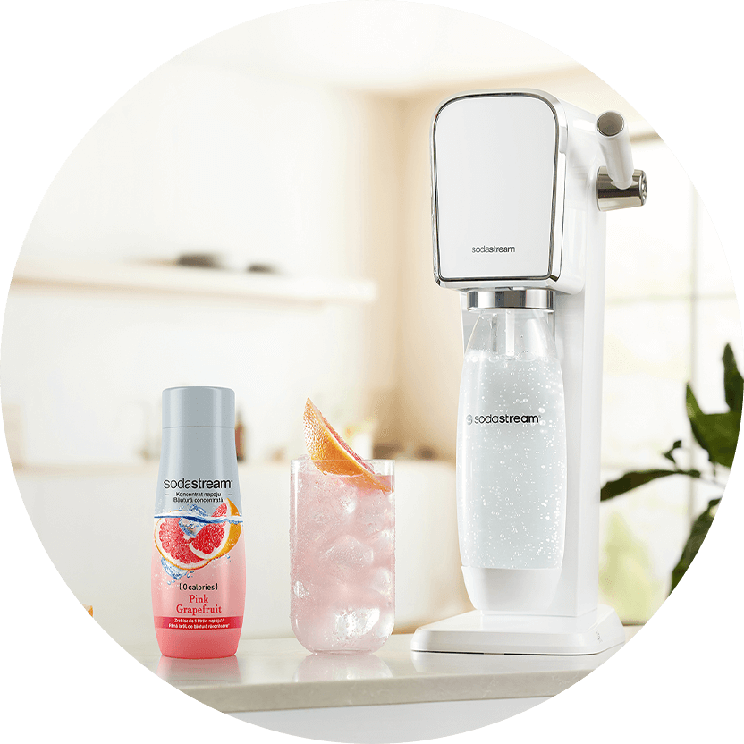

Syrop
SODASTREAM
SYROP PINK
GRAPEFRUIT, 440 ML
Samodzielnie skomponuj przepyszny grejpfrutowy napój z pomocą syropu Pink Grapefruit. Ciesz się cudownym orzeźwiającym smakiem bez obaw o swoją dietę. Syrop Pink Grapefruit nie zawiera cukru, aspartamu ani kalorii! Jest doskonałą i pyszną alternatywą dla sklepowych napojów, dzięki której w łatwy sposób zadbasz o swoje zdrowie oraz będziesz bardziej EKO.
jedna sodastream
wiele możliwości
LEPSZY WYBÓR DLA CIEBIE
Zadbaj o prawidłowe nawodnienie swojego organizmu w smaczny sposób bez zbędnych kalorii. Pink Grapefruit to doskonały zamiennik zwykłej wody, który szybko przygotujesz w domu bez potrzeby dźwigania ciężkich zgrzewek ze sklepu. Do przygotowania napoju wystarczy Ci zwykła woda lub woda gazowana przygotowana w dowolnym saturatorze SodaStream.

gazuj
miksuj
smakuj
Co potrzebujesz: woda, syrop Pink Grapefruit, kostki lodu, cząstki
grapefruita, gałązka świeżego rozmarynu, wysoka szklanka
Przepis: Wysoką szklankę napełnij kostkami lodu. Dodaj kilka cząstek
grapefruita. Zalej przygotowanym wcześniej napojem Pink Grapefruit i
udekoruj świeżą gałązką rozmarynu.
JEDNA SODASTREAM - WIELE MOŻLIWOŚCI
Rozkoszuj się różnorodnością smaków dzięki syropom SodaStream! Zainspiruj się naszą bogatą ofertą, która rozciąga się od orzeźwiającej Pepsi po egzotyczne Orange Mango. Twoje podniebienie będzie zachwycone różnorodnością doznań, a Ty będziesz mógł/mogła zaskakiwać swoich bliskich nowymi kulinarnymi eksperymentami. SodaStream to więcej niż gazowana woda – to szansa na odkrywanie pasji w przygotowywaniu napojów.
SPRAWDŹ NASZ PRZEPIS NA ORZEŹWIENIE
#PushForBetter